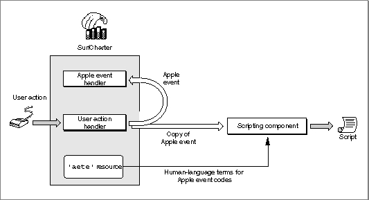

Legacy Document
Important: The information in this document is obsolete and should not be used for new development.
Important: The information in this document is obsolete and should not be used for new development.


Recordable Applications
If you decide to make your application scriptable, you can also make it recordable, allowing users to record their actions in your application in the form of a script. Even users with little or no knowledge of a particular scripting language can record their actions in recordable applications in the form of a script. More knowledgeable users can record scripts and then edit or combine them as desired.Applications generally have two parts: the code that implements the application's user interface and the code that actually performs the work of the application when the user manipulates the interface. To make your application fully recordable, you should separate these two parts of your application, using Apple events to connect user actions with the work your application performs.
Any significant user action within a recordable application should generate Apple events that a scripting component can record as statements in a script. For example, when a user chooses New from the File menu, a recordable application sends itself a Create Element event, and the application's handler for that event creates the new document. Implementing Apple events in this manner is called factoring your application. A factored application acts as both the client and the server application for the Apple events it sends to itself.
In general, a recordable application should generate Apple events for any user action that could be reversed by the Undo command. A recordable application can usually handle a greater variety of Apple events than it can record, since it must record the same action the same way every time even though Apple events might be able to trigger that action in several different ways.
A recordable event is any Apple event that any recordable application sends to itself while recording is turned on for the local computer (with the exception of events that the application indicates it does not want to be recorded). After a user turns on recording from the Script Editor application, the Apple Event Manager sends copies of all recordable events to Script Editor. A scripting component previously selected by the user handles each copied event for Script Editor by translating the event into the scripting component's scripting language and recording the translation as part of a Script Editor script. When a scripting component executes a recorded script, it sends the corresponding Apple events to the applications in which they were recorded.
Figure 1-9 illustrates how Apple event recording works. The user performs a significant action (such as choosing New from the File menu), and the SurfCharter application sends itself an Apple event to perform the task associated with that action. If recording is turned on, the Apple Event Manager automatically sends a copy of each recordable Apple event to the application (for example, Script Editor) that initiated recording. The scripting component handles the copy of each recordable event by translating it and recording it as part of a script. To translate each Apple event correctly, the scripting component must first check what equivalent human-language terminology the SurfCharter application uses for that Apple event. The scripting component then records the equivalent statement in the script.
The chapter "Recording Apple Events" in this book describes the Apple Event Manager's recording mechanism in more detail and explains how to use Apple events to factor your application.
Figure 1-9 Recording user actions in a factored application
